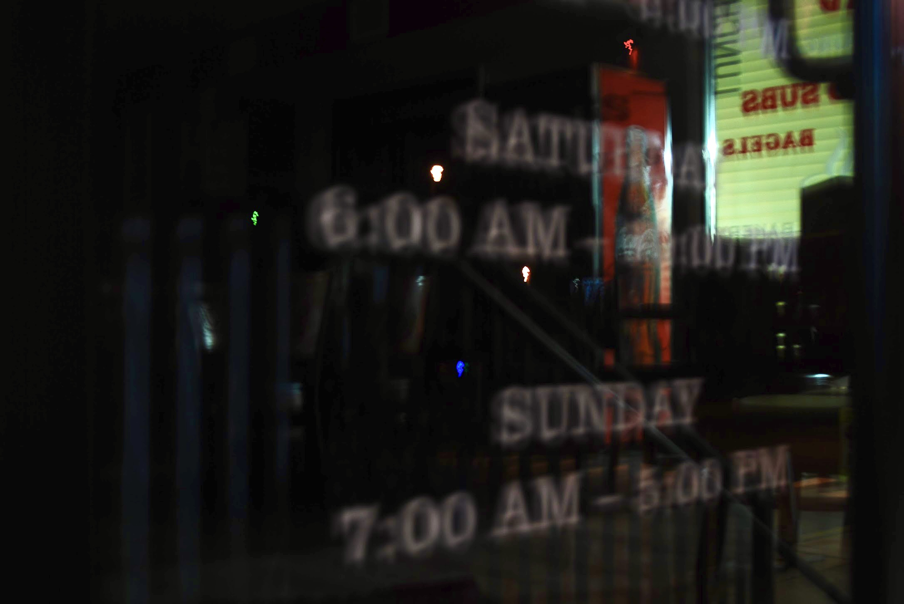
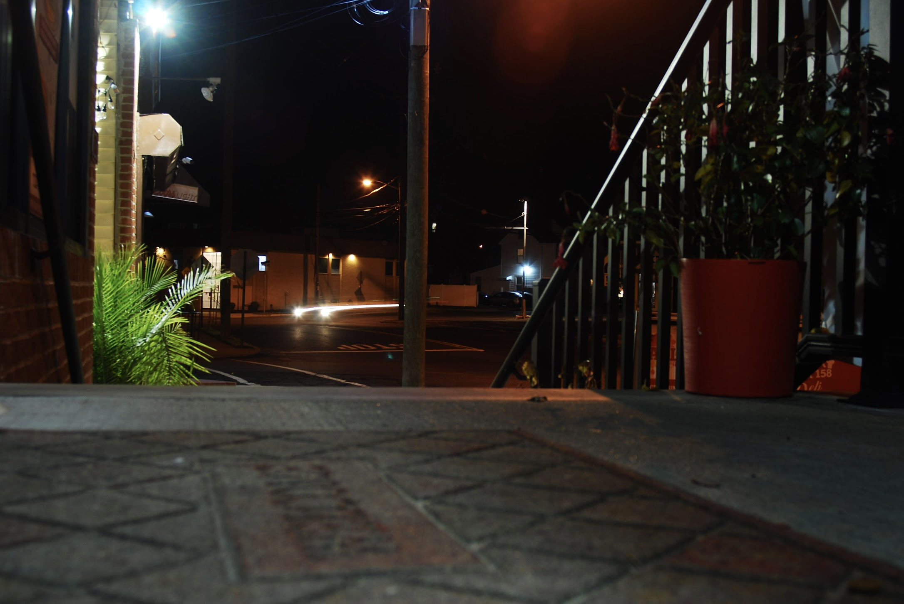
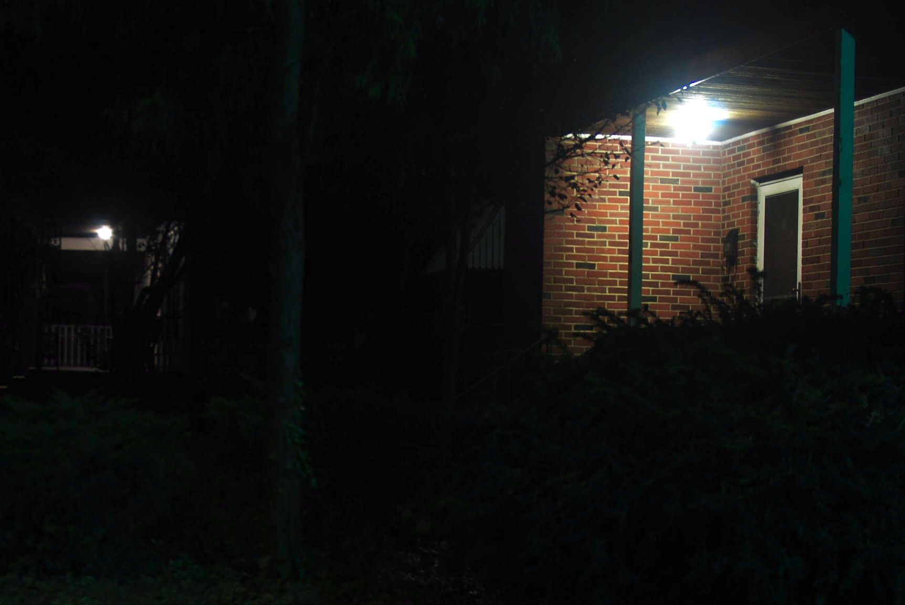
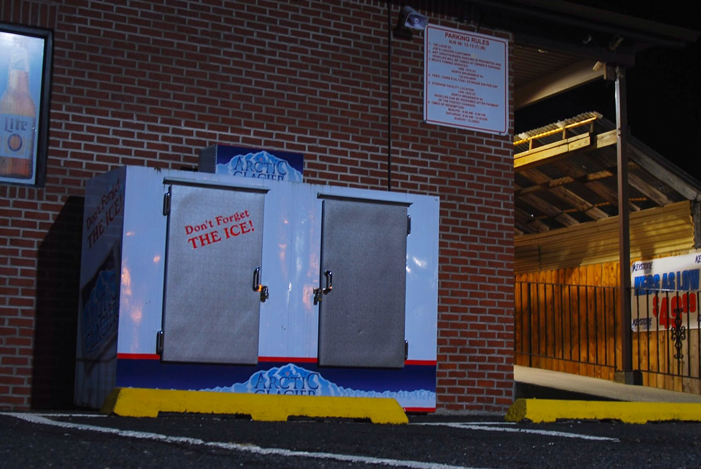
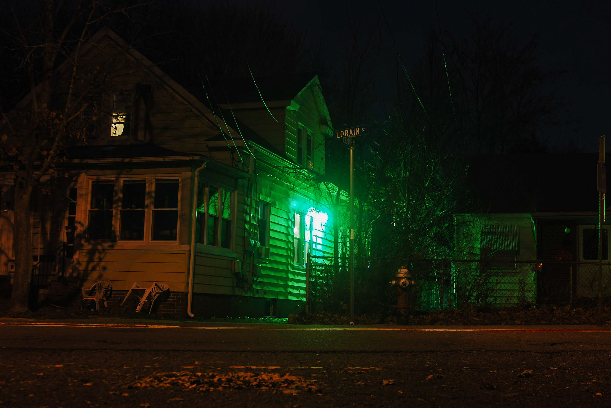

Michael Berliner
Design and Photography
Works
Home
Design
Photography
Contact
1 / 7

2 / 7

3 / 7

4 / 7

5 / 7
6 / 7
7 / 7

❮
❯
Liminal Spaces
Liminal Spaces is a photo series that focuses on the feeling of the familiar and nostalgia. I wanted to explore the essence of how familiar spaces captured in surreal and abstract ways can make us rethink our surroundings and leave us both with a sense confortability and uncomfortability. In the wake of the pandemic, even our homes have become our own liminal space in which we have begun to find these new nuances we havent seen before.